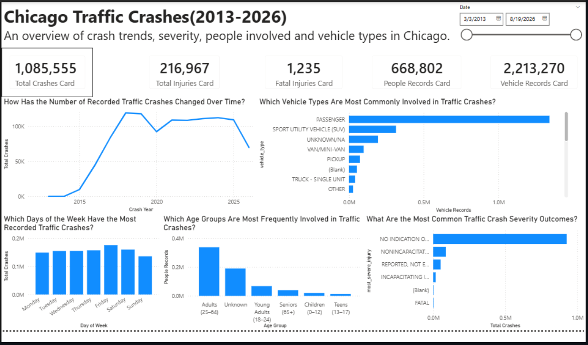

END-TO-END DATA ANALYTICS
Chicago Traffic Crashes Analysis
An analytical investigation of Chicago traffic crashes, exploring crash patterns, vehicle characteristics, geographical distribution and injury outcomes.
STATISTICS & PROGRAMMING STUDENT
I use analytical thinking, statistical concepts and data visualization to explore data, uncover meaningful patterns and support informed decision-making.
GET TO KNOW ME
I am a Statistics and Programming student at Kenyatta University with a strong interest in data analytics, statistical analysis and data-driven problem-solving.
I enjoy working with data, exploring patterns, asking meaningful questions and transforming raw information into insights that support better decision-making.
Through academic learning and practical projects, I am developing skills in Microsoft Excel, SQL, PostgreSQL, Power BI and Python. I also use Git, GitHub and AI-assisted tools to support my analytical workflow.
My goal is to become a well-rounded data professional who can approach complex problems analytically, communicate findings effectively and develop solutions that deliver value.
Asking questions and discovering what the data reveals.
Using logic, statistics and evidence to understand problems.
Building practical skills through learning and hands-on projects.
Turning analytical findings into meaningful solutions.
MY TOOLKIT
Tools and concepts I am developing and applying to explore data, perform analysis and solve analytical problems.
Data analysis and spreadsheets
Database querying and analysis
Data visualization and dashboards
Data manipulation and analysis
Statistical analysis and inference
Version control and collaboration
Research, coding and problem-solving
MY WORK
Practical projects where I apply analytical thinking, technical skills and data storytelling to investigate real-world problems.

END-TO-END DATA ANALYTICS
An analytical investigation of Chicago traffic crashes, exploring crash patterns, vehicle characteristics, geographical distribution and injury outcomes.
HOW I CAN CONTRIBUTE
Applying analytical tools and statistical thinking to help transform data into useful information.
Creating interactive Power BI dashboards and structured Excel reports that make data easier to understand.
Cleaning, organizing and preparing datasets using Python, pandas and Excel.
Querying, joining and aggregating data using SQL and PostgreSQL to extract meaningful information.
Exploring datasets, identifying trends and patterns, and communicating analytical findings.
GET IN TOUCH
I'm open to data analytics internship opportunities, entry-level roles, freelance projects and collaborations where I can contribute, learn and grow.
Send Me an Email ↗